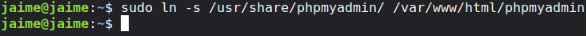
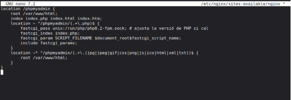
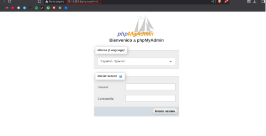
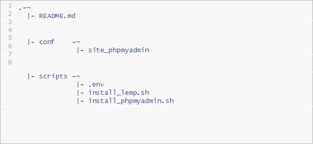

UD02 - Pràctica 04
Curs 2025-2026


Objectiu
- Instal·lar, assegurar i configurar phpMyAdmin en un servidor Ubuntu.
- Protegir PhpMyAdmin contra accessos no autoritzats.
- Automatitzar la instal·lació i configuració de phpMyAdmin mitjançant scripts de Bash.
Tasques a fer
Instal·lació de PhpMyAdmin
- Instal·la phpMyAdmin juntament amb les extensions PHP necessàries (php-mbstring, php-zip, php-gd, php-json, php-curl).

- Configura phpMyAdmin perquè funcione amb nginx.


Permetre l’Accés per Contrasenya del root de MySQL
- Canvia el mètode d’autenticació de l’usuari root de MySQL d’auth_socket a caching_sha2_password o mysql_native_password.

- Verifica els mètodes d’autenticació utilitzats per cadascun dels usuaris.

Configuració de l’Accés per Contrasenya per a un Usuari Dedicat de MySQL
- Crea un nou usuari de MySQL amb una contrasenya segura.

- Dona-li al usuari els privilegis apropiats per gestionar les bases de dades a través de phpMyAdmin.

Assegura la Instància de phpMyAdmin
- Crea un fitxer .htpasswd per emmagatzemar les credencials d’usuari i contrasenya.

- Modifica la configuració del lloc per aplicar l’accés per usuari i contrassenya.

- Reinicieu nginx per aplicar els canvis.


 Assegureu-vos de seguir bones pràctiques de seguretat a cada pas. No inclogueu con- trasenyes reals a les captures de pantalla o al document. El document ha d’estar ben organitzat i fàcil de seguir.
Assegureu-vos de seguir bones pràctiques de seguretat a cada pas. No inclogueu con- trasenyes reals a les captures de pantalla o al document. El document ha d’estar ben organitzat i fàcil de seguir.
Com Lliurar
Hauràs de crear un repositori a GitHub amb el nom de la pràctica i la descripció de la mateixa. El repositori ha de tenir el contingut següent:

IAW - 2ASIX 1/
Una documentació tècnica al vostre repositori de Github, i publicat a Github Pages amb la descripció de tots els passos que s’han dut a terme.
- Els passos detallats que vas seguir per completar cadascun dels requisits.
- Instal·lació i configuració de phpMyAdmin.
- Configuració d’autenticació i mètodes d’autenticació de MySQL i Nginx.
- Els scripts de Bash que s’han utilitzat per automatitzar la instal·lació i configuració de PhpMyAd- min.
- Captures de pantalla demostratives dins de la documentació.
A més del contingut anterior pot ser necessari crear altres fitxers de configuració. A continuació es mostra un exemple de com pot ser lestructura del repositori:
1
2
3
4
5
6
7
8
.-¬
|- README.md
|- conf
-¬
|- site_phpmyadmin
|- scripts -¬
|- .env
|- install_lemp.sh
|- install_phpmyadmin.sh
Scripts de Bash
El directori scripts ha d’incloure els fitxers següents:
- .env: Aquest fitxer conté totes les variables de configuració que s’utilitzaran als scripts de Bash.
- install_lemp.sh: Script de Bash amb l’automatització del procés d’instal·lació de la pila LEMP.
- install_phpmyadmin.sh: Script de Bash amb l’automatització del procés de creació i configura- ció d’instal·lació i securització de phpMyAdmin.
Recursos
IAW - 2ASIX 2/2